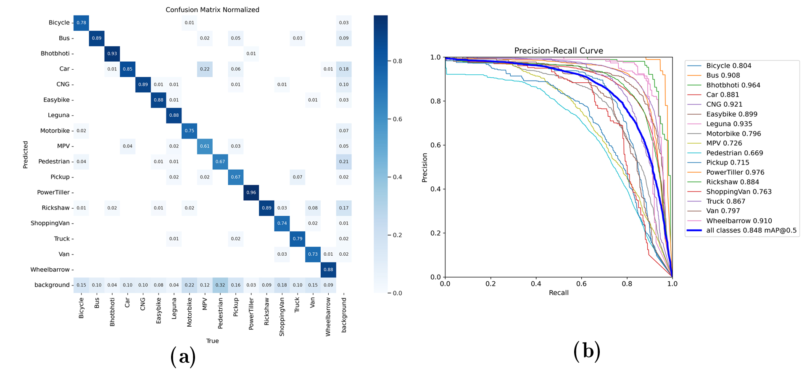

BNVD: Bangladeshi Native Vehicle Detection in Wild
Abstract: The success of autonomous navigation relies on robust and precise vehicle recognition, hindered by the scarcity of region-specific vehicle detection datasets, impeding the development of context-aware systems. To advance terrestrial object detection research, this paper proposes a native vehicle detection dataset for the most commonly appeared vehicle classes in Bangladesh. 17 distinct vehicle classes have been taken into account, with fully annotated 81542 instances of 17326 images. Each image width is set to at least 1280px. The dataset’s average vehicle bounding box-to-image ratio is 4.7036. This Bangladesh Native Vehicle Dataset (BNVD) has accounted for several geographical, illumination, variety of vehicle sizes, and orientations to be more robust on surprised scenarios. In the context of examining the BNVD dataset, this work provides a thorough assessment with four successive You Only Look Once (YOLO) models, namely YOLO v5, v6, v7, and v8. These dataset’s effectiveness is methodically evaluated and contrasted with other vehicle datasets already in use. The BNVD dataset exhibits mean average precision(mAP) at 50% intersection over union(IoU) is 0.848 corresponding precision and recall values of 0.841 and 0.774. The research findings indicate a mAP of 0.643 at an IoU range of 0.5 to 0.95. The experiments show that the BNVD dataset serves as a reliable representation of vehicle distribution and presents considerable complexities.
A Transformer-Based Approach for Summarizing Employee Logs


Abstract: Efficient summarization of employee daily logs is crucial for organizational productivity. This study utilizes the Google Pegasus model to enhance summarization, addressing traditional challenges with complex document structures. A dataset of daily work logs from a software development firm was augmented with advanced Generative AI techniques. The Pegasus model was fine-tuned with an input token length of 1024 and an output token length of 128. Evaluated using the ROUGE metric, the model achieved a ROUGE-1 score of 0.613, ROUGE-2 score of 0.373, ROUGE-L score of 0.557, and ROUGE-Lsum score of 0.556, demonstrating strong performance in generating coherent and contextually relevant summaries.
An Efficient Approach for Appearance Based Eye Gaze Estimation with 13 Directional Points
Abstract: This paper proposes a real-time eye gaze tracking interface based on an active appearance method using a simple web or smartphone camera in an unconstrained environment, where natural head movements have been taken into account. Here, feature extraction from an eye gaze image has been performed by separating the sclera pixel area from the masked eye image. The performance evaluation has been accomplished using decision tree, random forest, and extra tree classifiers. Over 13 targets, the proposed approach has an approximate 98% accuracy with extra tree classifier. The proposed approach may be beneficial to different eye gazed tracking applications in the field of human-computer interaction, robotics, and medical science.
Numerical Modeling of CuSbSe2-based Dual-Heterojunction Thin Film Solar Cell with CGS Back Surface Layer
Abstract: Ternary chalcostibite copper antimony selenide (CuSbSe2) can be a potential absorber for succeeding thin film solar cells due to its non-toxic nature, earth-abundance, low-cost fabrication technique, optimum bandgap, and high optical absorption coefficient. The power conversion efficiencies (PCEs) in conventional single heterojunction CuSbSe2 solar cells suffer from higher recombination rate at the interfaces and the presence of a Schottky barrier at the back contact. In this study, we propose a dual-heterojunction n-ZnSe/p-CuSbSe2/p+-copper gallium selenide (CGS) solar device, having CGS as the back surface field (BSF) layer. The BSF layer absorbs low energy (sub-bandgap) light through a tail-states-assisted upconversion technique, leading to enhanced conversion efficiency. Numerical simulations were run in Solar Cell Capacitance Simulator-1 dimensional software to examine how the performance of the proposed solar cell would respond under different conditions of absorber layer thickness, doping levels, and defect densities. The simulation results exhibit a PCE as high as 43.77% for the dual-heterojunction solar cell as compared to 27.74% for the single heterojunction n-ZnSe/p-CuSbSe2 counterpart, demonstrating the capability of approaching the detailed balance efficiency limit calculated by Shockley–Queisser.